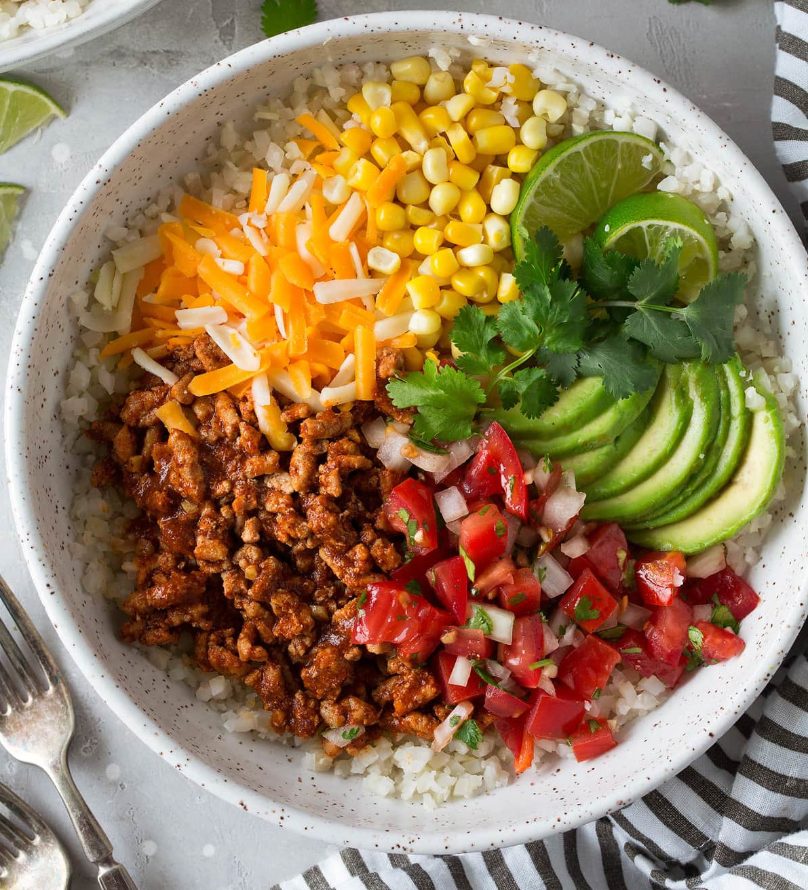

Turkey Taco Bowls
return home

To make the best turkey taco bowls you've ever tasted start by gathering the following
ingredients:
- 1lb turkey
- 4oz cheddar cheese
- 1/2 whole tomato
- 1 cup of white rice
- 1 can of corn
Follow the following steps to complete the dish:
- Cook turkey in pan on medium high heat until cooked throughly
- Cook rice
- Mix ingredients